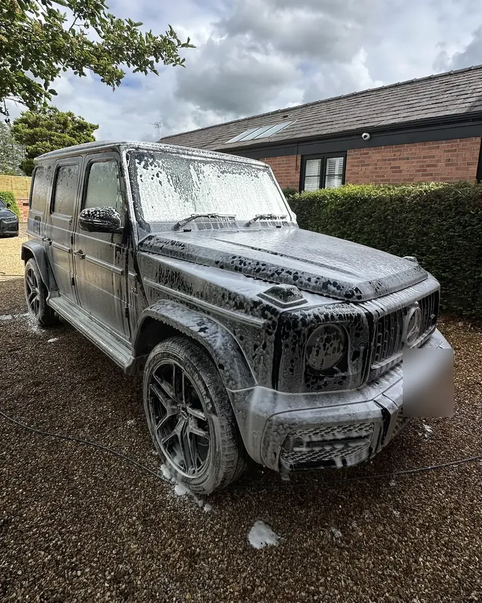
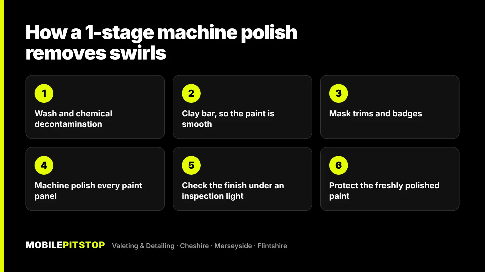
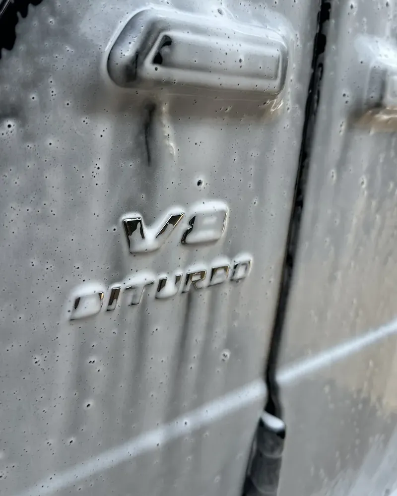

Swirl marks are thousands of fine scratches in the clear coat on top of your paint. Because they're scratches, not dirt, washing won't shift them, and wax only hides them for a few weeks. The way to remove them is to machine polish the paint, which levels off a very thin layer of clear coat until the scratches are gone.
A single-stage machine polish removes most light swirls, water marks and light scratches. It won't remove all of them, and a scratch that has gone through the clear coat needs a body shop, not a polisher.
The other half of the job is stopping them coming back. Almost all swirls are put there by the way a car is washed and dried, so unless that changes, they return. Below is what causes them, how to check your own paint, what you can do yourself and what we do on our jobs.
Modern car paint has a coloured base layer with a clear lacquer on top, called the clear coat. That clear coat is what gives the gloss, and it's also what takes the damage. Every time grit is dragged across it, it leaves a scratch far finer than a hair.
On their own you'd never see them. The problem is that light catches the edge of each one. With thousands of them going in every direction, a bright light reflected in the paint picks out a ring of scratches around it, which is why they look like circles or spider webs. Move your head and the swirls move with the reflection.
They show worst on dark colours. Black, dark grey and dark blue paint makes every fine scratch stand out, while silver and white hide a lot. That doesn't mean a white car has no swirls, only that you notice them less.
Swirls hide on a dull day and in shade, so you need direct light on clean paint:
Nearly every swirl comes from something rubbing grit across the paint. The usual causes are:
We explain the car wash side of this in more detail in our article on why hand car washes scratch your paint.

Honestly, not easily, and it's worth knowing what the products on the shelf actually do.
Glazes, cleaner waxes and many "scratch remover" products contain fillers and oils. They fill the fine scratches so they reflect less light, and the paint looks better for a while. Then the fillers wash out, usually within a few weeks, and the swirls are back. There's nothing wrong with using them, as long as you know they're a cover-up rather than a fix.
A hand polish can soften very light marks a little, but modern clear coats are hard, and it's very difficult to put enough even pressure on a whole panel by hand to level the scratches. For most swirled cars, it's a lot of effort for a small change.
A dual-action polisher is the safer kind of machine for beginners, and plenty of enthusiasts learn to use one well. It takes practice, though. The things that go wrong are going too hard on edges and body lines, where the paint is thinnest, using the wrong pad and polish combination, and polishing a car that hasn't been decontaminated, which grinds the bonded dirt into the paint. If you try it, start on a small test area somewhere low down, and check your results in direct light before carrying on.
Where DIY really stops is anything deeper than light swirls. If your nail catches in it, or the clear coat is already thin from years of polishing, it needs a more careful, multi-stage approach.
On our jobs, swirl removal is our Machine Polishing service, a single-stage enhancement polish done at your home or workplace. The polish itself is only one step. The prep before it matters just as much:

A single-stage polish removes most light swirls, water marks and light scratches. We'll never promise all of them. If the paint is badly swirled or you want it as close to perfect as possible, a 2-stage or multi-stage paint correction at our unit in Birkenhead uses a cutting stage for deeper defects and a refinement stage to bring the gloss back. That takes two days or more depending on condition and is booked by quote.
If you're planning a ceramic coating, polish first. A coating locks in whatever condition the paint is in, so coating swirled paint just protects the swirls. We cover that in more detail in wax vs sealant vs ceramic coating.
Not sure whether your paint needs polishing or just a good wash? Send us a few photos in daylight and we'll tell you straight which service the car needs, including when a cheaper one will do.
Polishing removes the scratches. Your washing routine decides how long the paint stays that way:

Protection helps too. A sealant or coating makes the surface slicker, so dirt comes off with less rubbing. If you'd rather not do it yourself, our Maintenance Wash uses exactly this method: snow foam pre-wash, two-bucket hand wash with grit guards, and hand drying with plush microfibre. It's meant for keeping an already-clean car clean, so it's the natural follow-up after a polish.